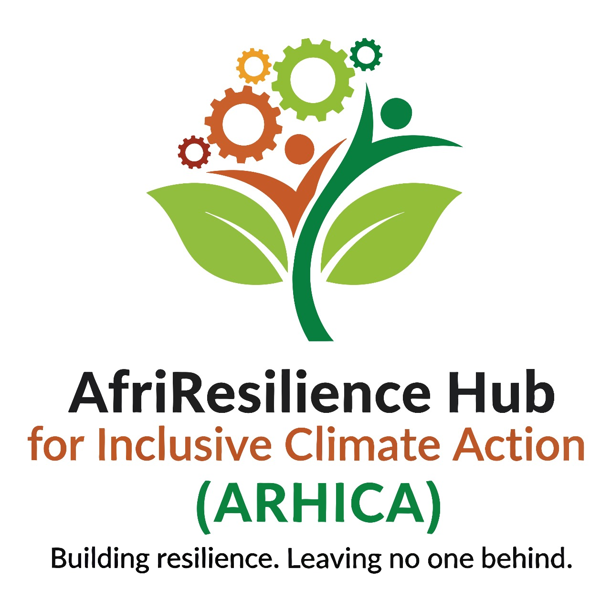

Tier II
Programs & Technical

Team Lead
Dr. Fatima Mbeki
- Program Manager – Climate Justice & Adaptation
- Program Manager – Inclusive Food Systems
- Program Manager – Disability Inclusion & Social Protection
- Research & Policy Lead
- MEL Manager
- Program Officers / Project Officers